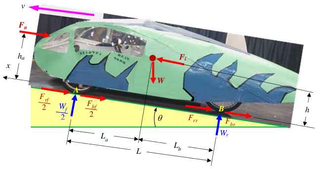
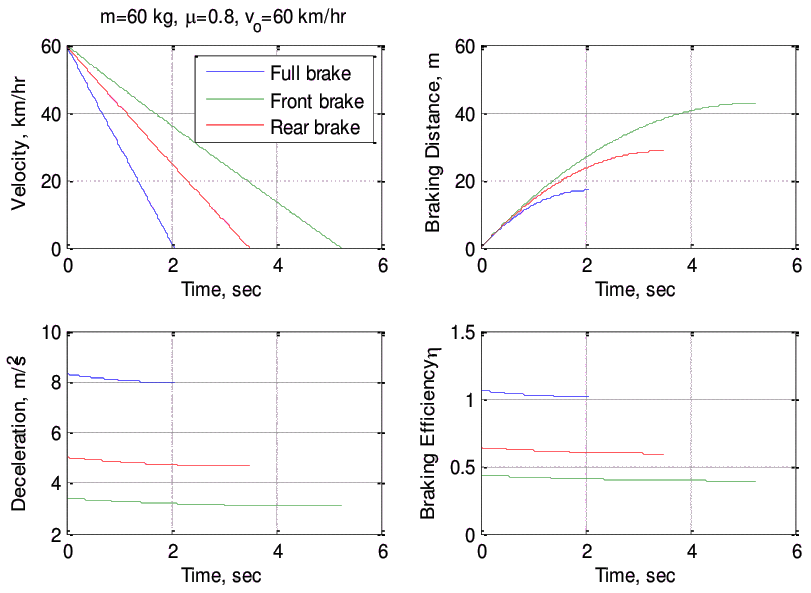
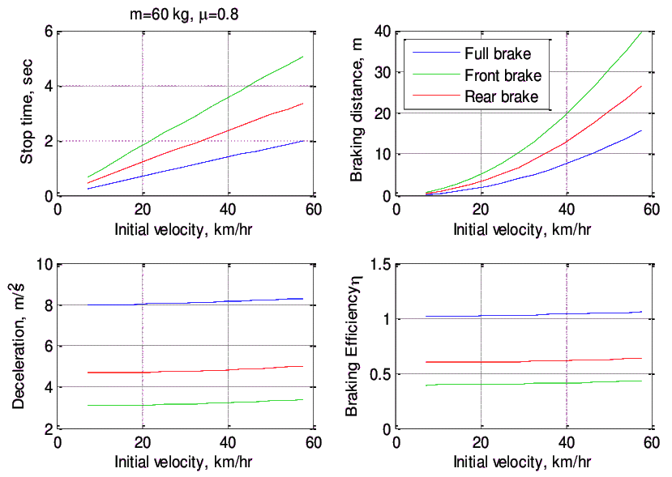
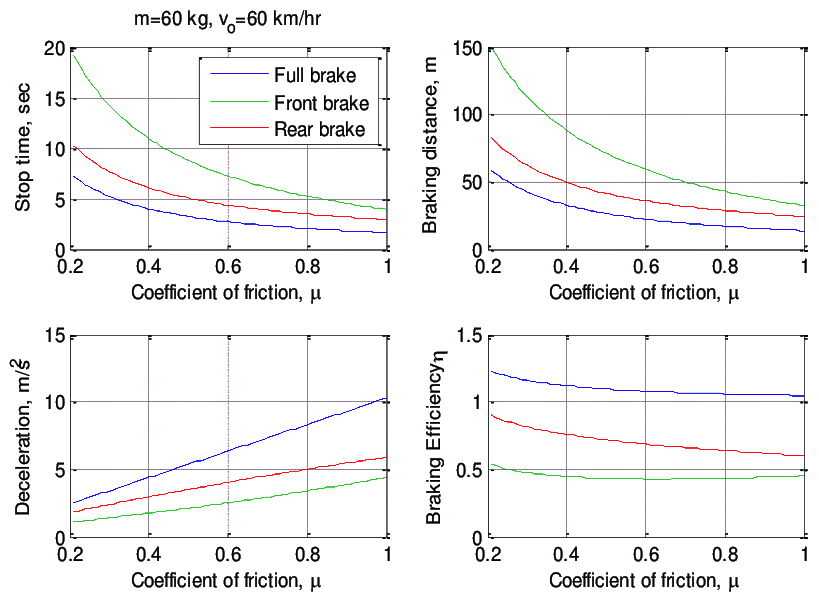

Contents | About | Contact
article 19, issue 07
Closed-form Method to Evaluate Bike Braking PerformanceJunghsen Lieh
December 24, 2012 and April 24, 2013
Abstract
The brake is an important safety device for all types of vehicles. Traditionally in calculations, aerodynamic and tire rolling resistant effects are neglected and thus the braking distance and stop time may be estimated by simplified equations. To obtain a more accurate result, the inclusion of all resistant forces is necessary. In this paper, low CG (center of gravity) vehicles such as recumbent bikes with no tip-over assumed are studied. It starts with the use of dynamic equilibrium to formulate a nonlinear dynamic equation. The coefficients representing full-brake, front-brake and rear-brake cases are then obtained. The closed-form solution for the velocity, stop time, and braking distance is then derived. Results for various cases are presented, as well as a file which can be used with programs such as Matlab in order to study the effect of the air drag coefficient, frontal area, rolling resistance, road gradient, and power consumption.
[Editor's note: The following presentation is a shortened version of the full paper in PDF format [400 kB] which includes the derivations of all equations, references and a sample script. Here, some of the equations in TeX notation will only be rendered if Javascript is enabled and MathJax available. The paper is an advancement on his HPeJ Article 10, where similar equations are presented but only for the simpler unbraked case. See also: additional scripts and discussion.]
Braking and Resistant Force Equilibrium
As shown in Figure 1, the major external forces acting on a vehicle during braking areFa aerodynamic force (drag; lift not considered)
Fb tire braking force, front and rear (= Fbf + Fbr)
Fr tire rolling resistance, front and rear (= Frf + Frr)
Fi inertia force (linear; wheel inertia not considered)
Fg gravitational force
The dynamic equilibrium of the system along the longitudinal (x) direction during braking can be written as
Fi = Fa + Fb + Fr + FgDefining m as the mass of bicycle plus the rider, ρ as the air density, C
D as the frontal air drag coefficient, Af as the frontal area, v as the forward velocity, Θ as the grade angle, g as the gravitational acceleration, and f0 and f1 as the rolling resistance coefficients (f1 is usually very small but is included here for completeness), the inertia, air drag, rolling resistance, and gravitational forces can be expressed in the following form:Fi = -m dv/dt
Fa = (ρ/2) CD Af v2
Fr = (fo + f1 v2) W cos(Θ)
Fg = W sin(Θ) where W = mg
Defining the distances La, Lb, h and ha as shown in figure 1 and summing the moments about the front wheel contact line (point A), the normal load on the rear wheel is
\( W_r = {WL_a cos(\Theta) + F_ah_a + mh \dot{v} + Wh sin(\Theta) \over L} \)
where \( \dot{v}=dv/dt \) . Similarly, summing the moments about the point B, the normal load on the front wheel is
\( W_f = {WL_b cos(\Theta) - F_ah_a - mh \dot{v} - Wh sin(\Theta) \over L} \)

Figure 1: Force balance of a low CG tricycle during braking. Here there are two front wheels with the forces given for one. For other wheel configurations the same principle holds, but longitudinally asymmetrical designs are not considered.
Define μ as the peak coefficient of tire/road friction and Wf and Wr as the normal loads on the front and rear wheel axes. For the current study, it is assumed that the braking force is near its peak value such that the maximum braking effect may be obtained, i.e.
Fbf = μWf and Fbr = μWr[Editor's note: This implies that all brakes are operated in an optimal manner, i.e. with the maximal force permissible before locking their respective wheels.]
Differential Equation for Braking
Rearranging the above equations, a nonlinear equation describing the dynamic equilibrium can be written in the following form:
- S1 dv/dt = S2 + S3 v2where S1, S2 and S3 are functions of vehicle parameters, and are different for full-brake, front-brake, and rear-brake cases.
If only the front brake is applied, they are:
\( S_1 = m \Big (1+ \mu {h \over L } \Big ) \)
\( S_2 = W \left \{ \mu \left [ {L_b \over L} cos(\Theta) - {h \over L} sin(\Theta) \right ] - f_0 cos(\Theta) - sin(\Theta) \right \} \)
\( S_3 = {\rho \over 2} (1 + \mu {h_a \over L}) C_D A_f + f_1 W cos(\Theta) \)
If only the rear brake is applied, they are:
\( S_1 = m \Big (1- \mu {h \over L } \Big ) \)
\( S_2 = W \left \{ \mu \left [ {L_a \over L} cos(\Theta) + {h \over L} sin(\Theta) \right ] - f_0 cos(\Theta) - sin(\Theta) \right \} \)
\( S_3 = {\rho \over 2} (1 - \mu {h_a \over L}) C_D A_f + f_1 W cos(\Theta) \)
For the normal condition the full-brake case (with both front and rear brakes) is applied, and the functions simplify to:
\( S_1 = m \)
\( S_2 = W \left [ \mu cos(\Theta) - f_0 cos(\Theta) - sin(\Theta) \right ] \)
\( S_3 = {\rho \over 2} C_D A_f + f_1 W cos(\Theta) \)
Closed-form Solution
The nonlinear equations can be integrated to give the velocity-time relation during braking:
\( v = \sqrt {S_2 \over S_3} tan \Bigg [ tan^{-1} \Bigg ( \sqrt{{S_3 \over S_2}} v_0 \Bigg ) - {{\sqrt {S_2 S_3} \over S_1} t \Bigg ]} \)
The stop time (ts) is obtained by setting the final velocity V = 0:
\( t_s = {S_1 \over \sqrt {S_2 S_3}} tan^{-1} \Bigg (\sqrt{S_3 \over S_2} v_0 \Bigg ) \)
The braking distance (Sd) can be derived to be:
\( S_d = { S_1 \over S_3 } \left \{ log_e \left \vert {cos(tan^{-1} (\sqrt{S_3 \over S_2} v_0) } - {{\sqrt {S_2 S_3} \over S_1} t) } \over {cos(tan^{-1} (\sqrt{S_3 \over S_2} v_0) } \right \vert \right \} \)
Simulation Results and Summary
With these closed-form solutions, the estimation of braking performance with various vehicle parameters for full-brake, front-brake and rear-brake cases becomes very straightforward and can be done with pocket calculators or simple spreadsheet files. Here the simulation is conducted in Matlab and a sample program is attached in the appendix (see full paper). Unaltered, it produces the following graphs:
Figure 2 shows the braking performance of the bike with initial velocity vo = 60 km/hr and tire-road coefficient of friction μ = 0.8 for the full-brake, front-brake and rear-brake cases. It can be seen that the velocities decrease almost linearly due to the fact that the decelerations are nearly constants. The nonlinearity in the decelerations is due to the air drag and tire rolling resistance at high speeds; however the nonlinearity becomes weaker as the vehicle speed decreases.
Figure 3 shows the braking performance of the vehicle with various initial velocities.
Figure 4 shows the braking performance of the vehicle with various tire-road coefficients of friction and an initial velocity of 60 km/hr. Again it can be seen that the decelerations and braking efficiencies are affected by the vehicle speed and rolling resistance.
From the values of decelerations, stop times, braking distances, and braking efficiencies, it is shown that with these vehicle parameters maximum braking is only reached by using both front and rear brakes.
[Editor's note: See additional discussion and files.]

Figure 2: Braking performance of the bike with initial velocity vo = 60 km/hr and tire-road coefficient of friction μ = 0.8 for full-brake, front-brake and rear-brake cases (note: efficiency (η = a/μg).

Figure 3: Braking performance of various initial velocities for full-brake, front-brake and rear-brake cases.

Figure 4: Braking performance of various tire-road coefficients of friction for full-brake, front-brake and rear-brake cases.
References:see full paper
About the author:
Junghsen Lieh, PhD
He is the adviser for the university's ASME HPV student group and has been involved with electric and solar racing. His research interests include hybrid electric unmanned aerial vehicles (UAV), intelligent control systems, multibody nonlinear dynamics, vehicle engineering, biomechanics, finite element analysis, and metal forming. He is currently working on the prototype and commercialization of push-pull wheelchairs, human-powered lawnmowers, and all-limb assisted electric bike based on a ratchet transmission.
is Professor for Mechanical & Materials Engineering
at Wright State University, Dayton Ohio 45435 USA
Contact:
(937) 775-5040 (ph); (937) 775-5009 (fax)
junghsen.lieh AT wright.eduHomepage:
http://www.cs.wright.edu/node/224
Human Power eJournal